ゴブリンがおしよせる
🎯 この章でできるようになること
- オブジェクト変数で、敵1体ずつに体力を持たせられる
- 画面の外から、敵を次々に出てこさせられる
- 「For each object」のイベントで、1体ずつ順番に調べられる
- UI レイヤーに体力バーとたおした数を出し、体力が0でやりなおしにできる
3-1. この章で作るしくみ
かべからは押しもどす
3-2. ゴブリンと変数を用意しよう
「Objects」の「＋」からアセットストアを開き、goblin で検索して「Goblin」（Dungeon パックのもの）をプロジェクトに追加します。
アニメーションは「Idle」と「Run」の2つです。
ゴブリンはイベントで作り出すので、シーンには置かなくてOK。
もし置いてしまったら、シーンのゴブリンをクリックして Delete キーで消しておこう。
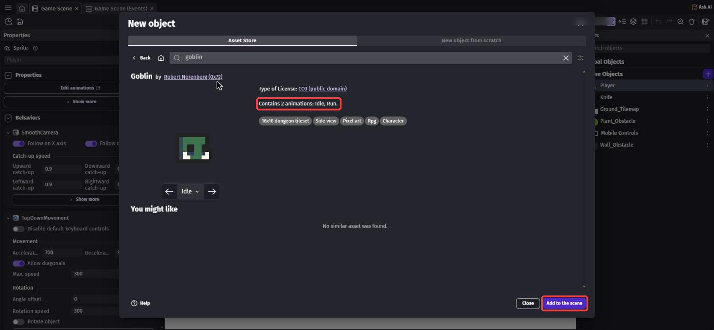
右の一覧の Goblin をクリックすると、左に Goblin のプロパティが出ます。
「Object Variables」の右の「＋」を押して、変数を作ります。
名前を Health、型は「Number」、値を 1 にします。
ナイフ1回でたおれるゴブリンになります。
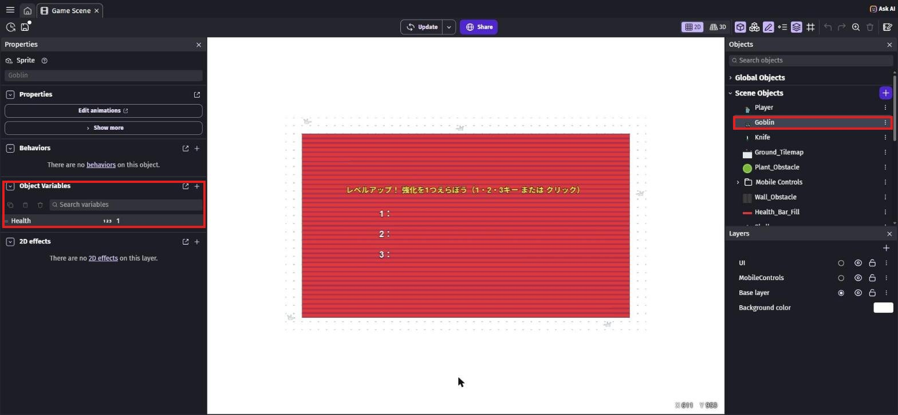
Health ＝ 1（赤枠）。写真は完成したときのもので、シーンのまん中には第4章で作るレベルアップの画面が写っています
ゴブリンが10体いたら、10体それぞれが自分の Health を持っています。
だから、ナイフが当たったゴブリンだけ体力がへります。
第2章と同じように「Game Scene variables」の画面を開き、次の7つを足して「Apply」を押します。
| 名前 | 型 | 値 | 意味 |
|---|---|---|---|
PlayerHealth | Number | 100 | 騎士の体力 |
MaxHealth | Number | 100 | 体力の最大 |
Kills | Number | 0 | たおした数 |
KnifeDamage | Number | 1 | ナイフ1本のダメージ |
SpawnAngle | Number | 0 | ゴブリンを出す方向 |
Elapsed | Number | 0 | たった時間（第5章で使う） |
SpawnFactor | Number | 1 | 出てくる間隔の倍率（第5章で使う） |
3-3. ゴブリンが追いかけてくる
「Game Scene (Events)」で新しいグループ Enemy を作ります。
グループは Player・Knife のグループの下に置こう。
条件のないイベントを作ります。
アクションは4つです。
move towardで検索 →「Add a force to move toward an object」、Object はGoblin、Target Object はPlayer、Speed は100、下は「Instant」のまま- 「Animation (by name)」で
Goblinを「Run」 separateで検索 →「Separate objects」、Object はGoblin、Objects (won't move) はWall_Obstacle- もう1つ「Separate objects」で、
GoblinとPlant_Obstacle
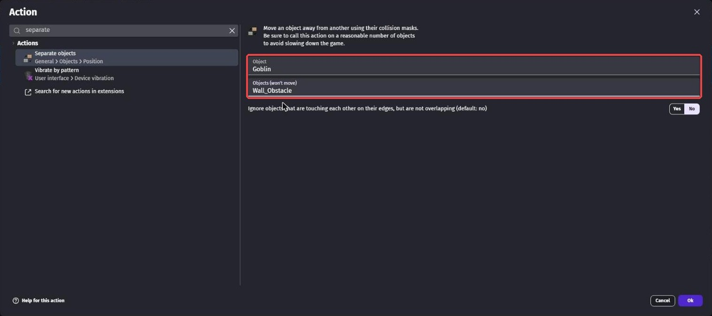
イベントシートには「Move Goblin toward Player with an instant force of 100 pixels」「Move Goblin away from Wall_Obstacle (only Goblin will move)」のように表示されます。
第5章で、この 100 を「時間がたつほど速くなる式」に変えます。
Instant の力を毎回かけるので、ゴブリンはずっと騎士を追いかけ続けます。
「Separate objects」は、重なったら1つ目を押しもどすアクション。
これで、ゴブリンもかべをすりぬけなくなります。
新しいイベントの条件に、X position で検索 →「X position」を入れます。
Object は Goblin、Sign of the test は「> (greater than)」、値は Player.X()。
アクションは「Flip the object horizontally」で Goblin を「Yes」。
もう1つイベントを作り、Sign of the test を「≤ (less or equal to)」、Flip を「No」にします。
騎士より右にいるゴブリンは左を、左にいるゴブリンは右を向きます。
3-4. ナイフでたおそう
新しいイベントの条件に、collision で検索 →「Collision」を入れます。
1つ目の Object は Knife、2つ目は Goblin。
アクションは3つです。
- 「Delete the object」で
Knife change object variable valueで検索 →「Change object variable value」、Object はGoblin、Variable はHealth、Modification's sign は「- (subtract)」、Value はKnifeDamagetintで検索 →「Tint color」、Goblinを"255;80;80"（赤っぽくする）
"255;255;255" は白（もとの色のまま）です。
赤だけ大きくすると、赤っぽい色になります。
第5章で体力が多いゴブリンが出てくると、「1回当たったゴブリン」が見分けられて便利です。
Enemy グループの中のイベントを右クリックして、「Add」→「For each object」を選び、Object は Goblin にします。
イベントシートには「Repeat for each instance of Goblin (default order):」と表示されます。
このイベントの条件に、object variable value で検索 →「Object variable value」、Object は Goblin、Variable は Health、Sign of the test は「≤ (less or equal to)」、値は 0。
アクションは2つです。
- 「Delete the object」で
Goblin - 「Change variable value」で
Killsを「+ (add)」1
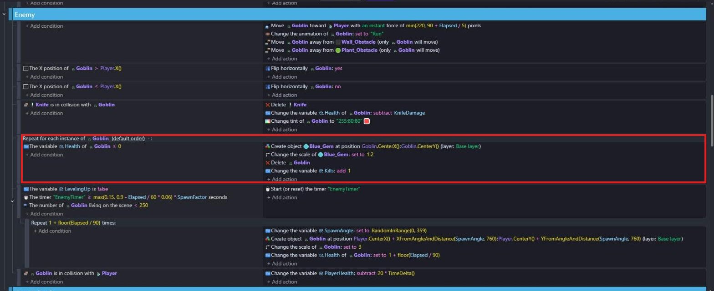
写真は完成したときのものです。
赤枠の中の Blue_Gem の2行は第4章で足すので、今は「Delete Goblin」と「Change the variable Kills: add 1」だけでOK
ふつうのイベントだと、同じ瞬間に2体たおれても「まとめて1回」と数えてしまい、Kills が1しかふえません。
1体ずつ調べれば、2体なら2回、ちゃんと数えられます。
第4章では、たおれたゴブリン1体ずつの場所にジェムを落とすのにも使います。
3-5. ゴブリンをどんどん出そう
Enemy グループに新しいイベントを作ります。
条件は3つです。
- 「Variable value」で
LevelingUpが「False」 - 「Value of a scene timer」で
"EnemyTimer"が「≥ (greater or equal to)」0.9 - 左の一覧で
Goblinを選び、「Number of object instances on the scene」、Sign of the test は「< (less than)」、Value to compare は250
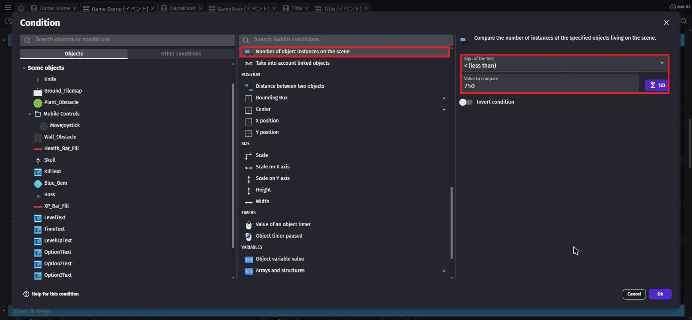
アクションは5つです。
- 「Start (or reset) a scene timer」で
"EnemyTimer" - 「Change variable value」で
SpawnAngleを「= (set to)」RandomInRange(0, 359) - 「Create an object」で
Goblinを、下の X・Y の式の場所に作る - 「Scale」で
Goblinを3 - 「Change object variable value」で
GoblinのHealthを「= (set to)」1
Player.CenterX() + XFromAngleAndDistance(SpawnAngle, 760)Player.CenterY() + YFromAngleAndDistance(SpawnAngle, 760)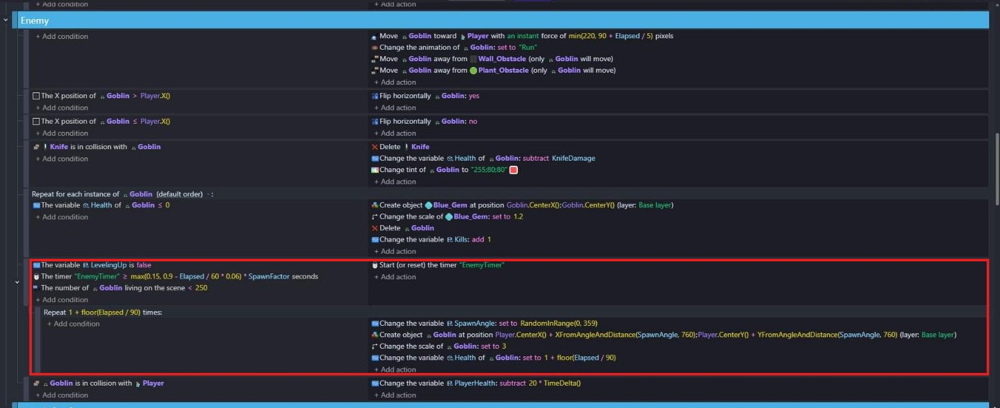
写真は第5章まで終わったときのものです。
タイマーの
max(0.15, …) * SpawnFactor、「Repeat 1 + floor(Elapsed / 90) times:」、Health の 1 + floor(Elapsed / 90) は第5章で変えます。今は、タイマーは
0.9、繰り返しはなしで、アクションはタイマーのリセットと同じところに入れ、Health は 1 でOKY のほうは YFromAngleAndDistance です。
騎士のまん中から、ランダムな角度（0〜359度）に 760 はなれた場所にゴブリンを作ります。
画面の横はばは 1280 なので、760 はなれていれば、だいたい画面の外から歩いてきます。
250体より多くならないようにしているのは、ゲームが重くなりすぎないためです。
Start グループの「At the beginning of the scene」のイベントに、アクションを1つ足します。
「Start (or reset) a scene timer」で "EnemyTimer"。
これがないと、ゴブリンが1体も出てきません。
Enemy グループのいちばん下に新しいイベントを作ります。
条件は「Collision」で Goblin と Player。
アクションは「Change variable value」で PlayerHealth を「- (subtract)」、Value は下の式。
20 * TimeDelta()20 × TimeDelta() を毎回引くと、ちょうど「1秒で20へる」になります。
PCの速さがちがっても、へる速さは同じになります。
3-6. 体力バーとたおした数を出そう
「Game Scene」のタブにもどります。
右下の「Layers」で「＋」を押して新しいレイヤーを作り、名前を UI にして Enter。
UI の右の丸いボタンを押して、これから置くものが UI レイヤーに入るようにします。
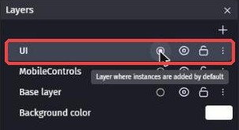
体力バーや数字は UI レイヤーにまとめておくと、ゴブリンやナイフの上に、いつも見えるように表示されます。
「＋」からアセットストアを開き、health bar で検索します。
「Health Bar Fill」（作者: Pixel-boy、CC0）を選んで追加します。
これは「Tiled Sprite」（タイル状にくり返す画像）なので、横の長さを自由に変えられます。
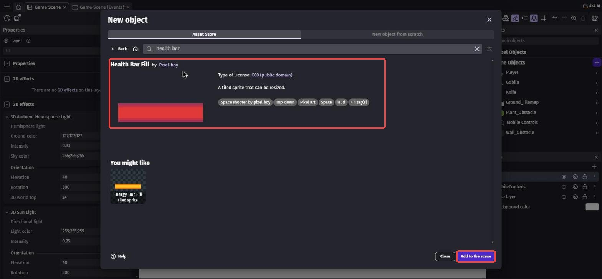
次に skull で検索して、「Skull」（作者: Alex's Assets、CC0）を追加します。
たおした数のマークに使います。
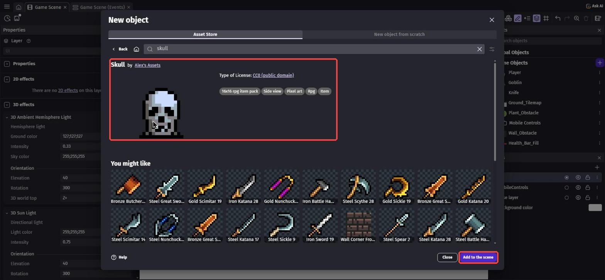
最後に、たおした数の文字を作ります。
「＋」→「New object from scratch」→ text で検索 →「Text」を選びます。
Object name を KillText、Size を 36、「Bold」（太字）にチェック。
Initial text to display は 0。
「Outline」の Enabled にチェックして、Thickness（ふちの太さ）を 4 にして「Apply」。
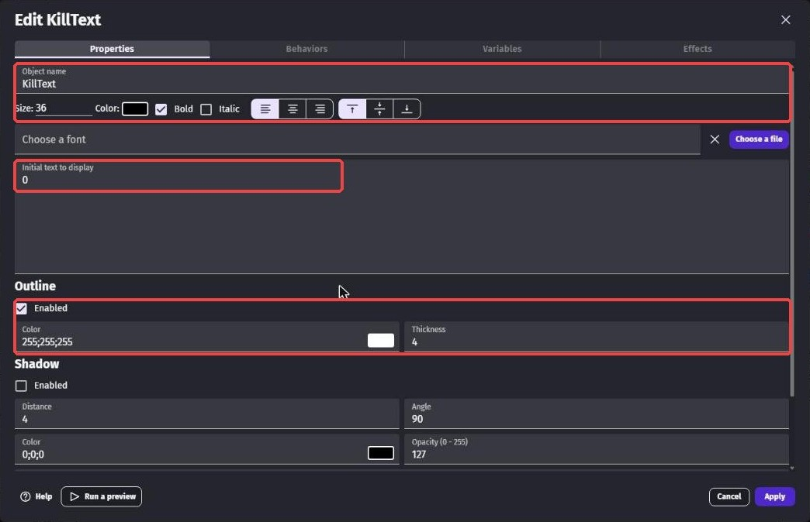
3つをステージにドラッグして置き、左の数字で位置と大きさを決めます。
置いたものをクリックすると、左に X・Y・W（幅）・H（高さ）が出ます。
いちばん下のレイヤーが「UI」になっているかも確かめよう。
Health_Bar_Fill… X20、Y20、W200、H24（W と H の右の鎖のマークを押して、たて横の比率を自由にしてから入れる）Skull… X20、Y56、W40KillText… X70、Y52
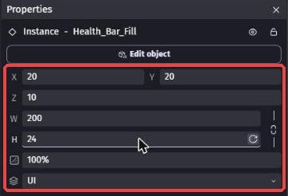
置き終わったら、Layers の「Base layer」の丸いボタンを押して、もとにもどしておこう。
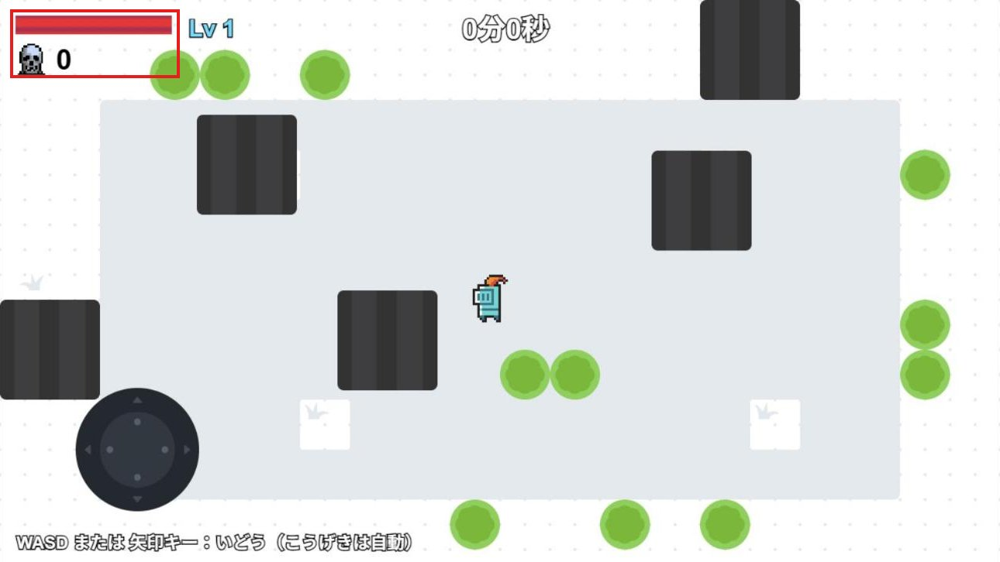
写真は完成したときのものなので、「Lv 1」や時間、下の説明文はまだ出ていなくて大丈夫です
「Game Scene (Events)」にもどり、いちばん下に新しいグループ UI を作ります。
その中に条件のないイベントを作り、アクションを2つ入れます。
widthで検索 →「Width」、Health_Bar_Fillを「= (set to)」、Value は下の式- 左の一覧で
KillTextを選び、「Text」で「= (set to)」ToString(Kills)
max(0, PlayerHealth) / MaxHealth * 200体力が 100 のうち 50 なら、0.5 × 200 ＝ 100 の長さです。
max(0, PlayerHealth) は、体力がマイナスになってもバーの幅がマイナスにならないようにするためのものです。
ToString() は数を文字に変える式で、Kills を文字にして KillText に出します。
UI グループに新しいイベントを作ります。
条件は「Variable value」で PlayerHealth、Sign of the test は「≤ (less or equal to)」、値は 0。
アクションは change the scene で検索 →「Change the scene」、一覧から「Game Scene」。
同じシーンに変えると、最初からやりなおしになります（第6章でゲームオーバーの画面に変えます）。
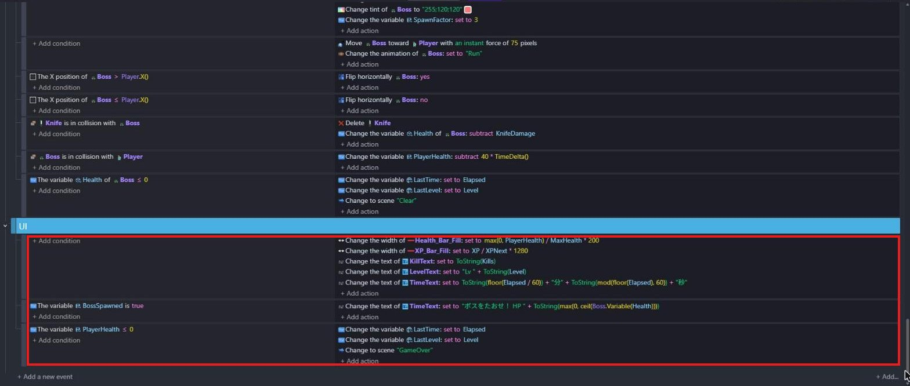
写真は完成したときのものです。
今作るのは、Health_Bar_Fill と KillText の2行と、「PlayerHealth ≤ 0 → Change to scene "Game Scene"」だけ。
XP_Bar_Fill・LevelText は第4章、TimeText とボスの行は第5章、LastTime・LastLevel と "GameOver" は第6章で作ります
3-7. 動かしてみよう
Enemy グループは、上から「追いかける」「向き2つ」「ナイフが当たった」「1体ずつたおす」「ゴブリンを出す」「さわるとダメージ」の順にならんでいます。
写真は完成したときのものなので、速さの
min(220, 90 + Elapsed / 5) などの式（第5章）や Blue_Gem の行（第4章）も入っています保存してから Preview します。
画面の外から、ゴブリンが次々に歩いてきます。
ナイフが当たるとゴブリンが消えて、ドクロの横の数字がふえます。
ゴブリンにさわられると、左上の赤いバーがへっていきます。
バーがなくなると、ゲームが最初から始まります。
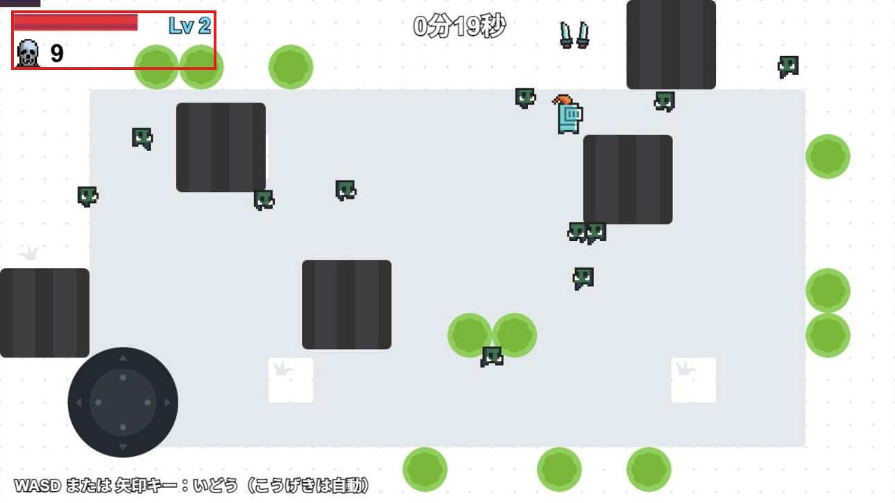
左上に体力バーとたおした数（赤枠）。
「Lv 2」は第4章で出るようになります
💪 やってみよう
ゴブリンの速さ（100）、出てくる間隔（0.9秒）、ダメージ（20）を変えて、むずかしさを調整してみよう。
試したら、もとの数にもどしておこう。
ヒント
速さは「Add a force to move toward an object」、間隔は "EnemyTimer" の条件、ダメージは 20 * TimeDelta() の 20 です。
第5章では、これらを「時間がたつほどむずかしくなる式」に変えます。
3-8. 🚨 つまずきポイント集
ゴブリンが1体も出てこない
原因: 「At the beginning of the scene」で "EnemyTimer" をスタートしていない、またはタイマーの名前がちがう。
直し方: 2か所とも "EnemyTimer" になっているか、大文字・小文字まで確かめよう。
ゴブリンがとても小さい
原因: 作ったあとの「Scale」を入れていない。
直し方: Create an object のすぐ下に「Scale」で 3 を入れよう。
ナイフが当たってもたおれない
原因: Health をシーン変数に作ってしまった、または「Object variable value」ではなく「Variable value」を使った。
直し方: 一覧の Goblin をクリックして、左の Object Variables に Health（1）があるか確かめよう。
体力バーや数字がゴブリンにかくれる・いっしょに動いてしまう
原因: UI レイヤーではなく Base layer に置いた。
直し方: 置いたものをクリックして、左の レイヤー が「UI」になっているか確かめよう。
すぐにやりなおしになる
原因: Value を 20 だけにして、TimeDelta() をかけていない。
直し方: 20 * TimeDelta() になっているか確かめよう。
3-9. ✅ チェックリスト
全部チェックできたら第3章クリア！
🎉 次回は、ジェムを集めてレベルアップするしくみを作るよ。